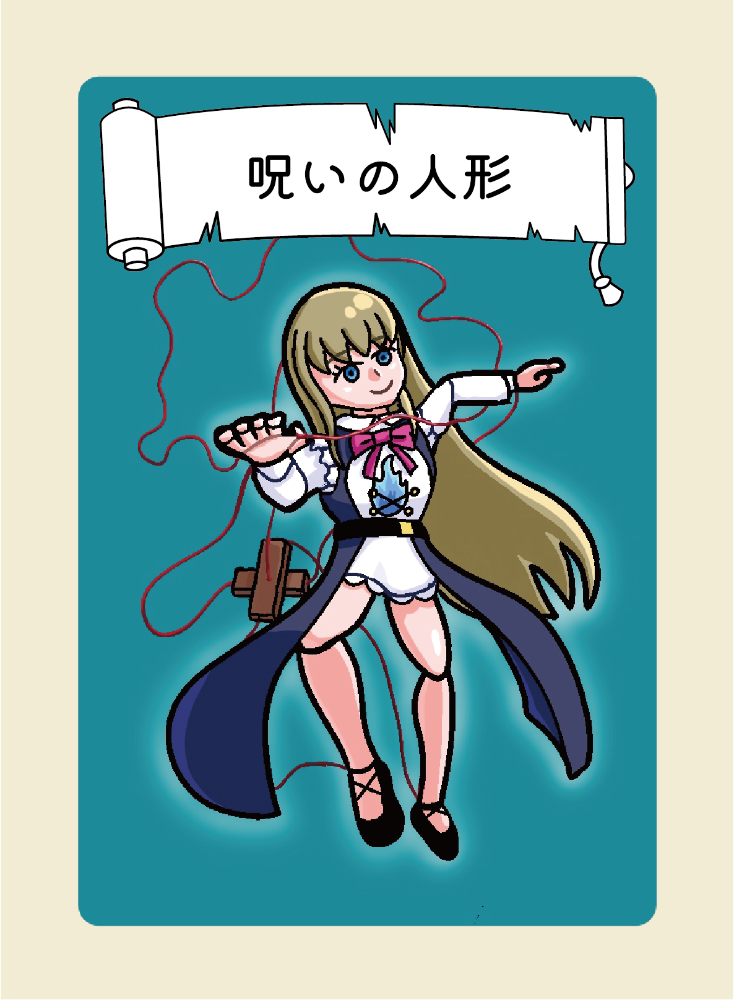

怪異一覧
選択中の怪異

怪異1の説明文をここに書いてください。
怪異2の説明文をここに書いてください。
怪異3の説明文をここに書いてください。
怪異4の説明文をここに書いてください。

怪異5の説明文をここに書いてください。
怪異6の説明文をここに書いてください。
怪異7の説明文をここに書いてください。
怪異8の説明文をここに書いてください。
怪異9の説明文をここに書いてください。
怪異10の説明文をここに書いてください。
怪異11の説明文をここに書いてください。

怪異12の説明文をここに書いてください。

怪異13の説明文をここに書いてください。

怪異14の説明文をここに書いてください。

怪異15の説明文をここに書いてください。

怪異16の説明文をここに書いてください。

怪異17の説明文をここに書いてください。

怪異18の説明文をここに書いてください。

怪異19の説明文をここに書いてください。

怪異20の説明文をここに書いてください。

怪異21の説明文をここに書いてください。

怪異22の説明文をここに書いてください。

怪異23の説明文をここに書いてください。

怪異24の説明文をここに書いてください。
怪異25の説明文をここに書いてください。
怪異26の説明文をここに書いてください。

怪異27の説明文をここに書いてください。
怪異28の説明文をここに書いてください。
怪異29の説明文をここに書いてください。